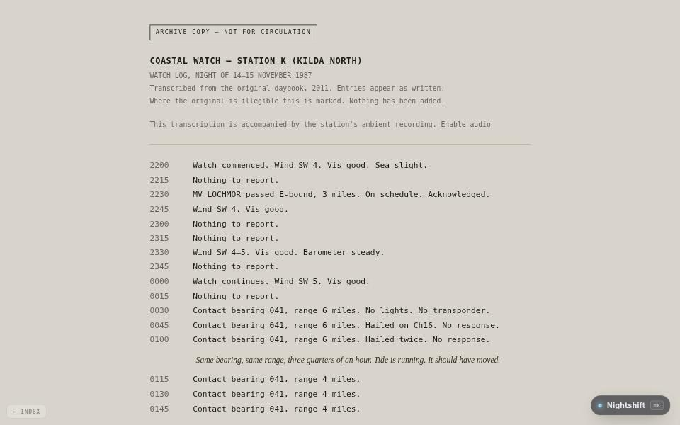

fiction · about 5 min · The Night Isles
Nightshift
A coastal watch log from one night in 1987. It opens with the weather and the shipping, and it does not stay there.

The problem
Horror on a page with no jump scares: only a log, read in order.
What it does
- A watch log from one night in 1987, read in order
- Twelve timed beats that make up the whole haunting
- Sound, and an ending that waits for the last word
The most interesting decision
The haunting is a list
Twelve beats, each a trigger and the name of an effect, so the timing of the whole story can be read, tested and changed in one place.
Built with
- Canvas 2D
- Web Audio
Evidence
It opens with the weather and the shipping, and it does not stay there. Read its tests
Its world
A watch hut in the fog. One window lit. The radio is still on.